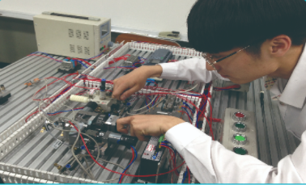

1. 학과 소개
하이텍융합기계과는 NCS기반 교육과정 운영과 도제학교 훈련 프로그램 적용으로 급변하는 첨단 산업사회에
성공적인 직업인으로 살아갈 기계분야 기술과 감서을 갖춘 전문인력을 양성한다.
기계를 기반으로 하고 전기전자, 3D프린터 교과를 배움으로써 무인생산체계에 기반이 되는 가공, 통신, 제어,
분야 융합형 인재를 양성하고 4차 산업 혁명 시대에 따른 제조업의 패러다임 변화에 발맞춰 미래 신상업 신기술 변화에
적절히 대응할 수 있는 교육을 추구한다.
기계공학(기계기초공작, 선반, 밀링)을 중심에 두고 타 학문 분야 즉 전기전자, 3D프린터 기술을 습득함으로써 T자형
인재(본 전공에 강하고 타 전공과 협력할 수 있는 인재)를 양성하여 취업 경쟁력을 강화하였다.
2. 전공 과목
기계일반, 기초제도, 기계기초공작, 컴퓨터활용생산, 밀링가공, 3D프린팅, 자동제어시스템운용
3. 실습내용
기계제도, 선반가공, 밀링가공, 머시닝센터가공, 3D모델링, 3D프린팅, CAD/CAM, PLC
4. 취득 자격증
금형기능사, 컴퓨터응용밀링기능사, 전산응용기계제도기능사, 생산자동화기능사, 기계가공조립기능사
5. 출처
-
경기기계공업고등학교 홈페이지